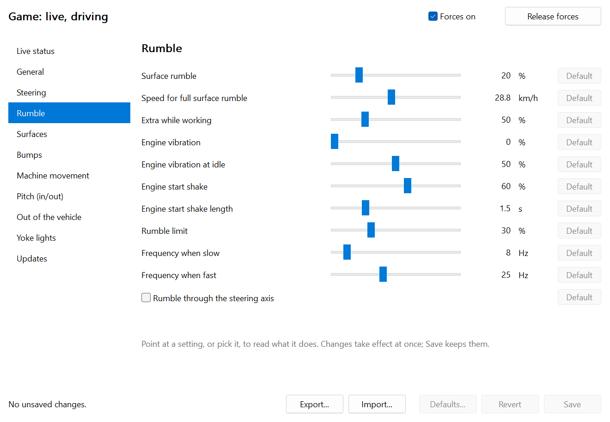

Force feedback for Farming Simulator 25
Feel the field.
Farming Simulator 25 on a MOZA flight yoke, with the yoke as your steering wheel and real forces behind it: the weight of the load, gravel under the tyres, a log under one wheel, the engine catching.
Trying things early? Pre-release is out.
Free and open source. Unofficial: not made by, or connected with, MOZA or GIANTS Software.
Every surface has its own feel
Not one rumble, turned up and down.
The game knows what each wheel is standing on. The link gives every kind of ground its own pattern: how fast it shakes, how lumpy it is, whether it pulses. Pick a surface and a speed to see the vibration it sends to the yoke.
What you feel
A tractor's steering, as far as a yoke can say it.
Steering with weight
Centering that builds with speed, weight that grows with the load, a self-aligning pull that goes light when the wheels slip, and an extra drag while an implement works the ground.
Surfaces
Gravel buzzes, grass and snow are low and soft, a sown field is steady, a ploughed one comes clod by clod and ridges pulse as you cross them. Each has its own strength slider.
Bumps and kicks
A log under the left wheel jerks the wheel to the left. Rail tracks under both give a thump and a wiggle. A twenty-tonne machine shrugs off what throws a small one about.
The engine
A shake as the engine turns over and catches, then a vibration that follows it: slow at idle, quicker and stronger with the revs. Electric machines stay silent, as they should.
The machine's own movement
Off road the cab rocks and bounces against the horizon. The wheel is pushed with the rocking and the yoke moves in and out with the pitching.
Newer than the latest releaseInstalls and updates itself
An installer, an icon by the clock, and updates offered in its menu when a new release is published here. Nothing is downloaded or installed until you pick it.
Tune it while you drive
Every force has a slider.
Changes take effect the moment you make them, so you can feel the difference with the tractor still rolling.
- A page per group of forces, and a live view of what the game is reporting.
- One switch turns every force off, and one button lets go of the yoke at once.
- Export your settings to a file, or import someone else's.
The settings window shown may be newer than the latest release, which has the same settings as a page in your browser.

How it works
Two small parts and one line of text.
Farming Simulator sends a steering wheel almost nothing. So a mod inside the game says what the machine is doing, and a small program turns that into forces.
Reads the machine
A Lua mod in the game reads speed, steering, mass, engine, the ground under each wheel and how the body is moving, up to sixty times a second.
Turns it into forces
A program by the clock works out what the steering should feel like and how it should shake, smoothing every change so nothing jumps.
Pushes back
The forces go to the base through MOZA's own SDK as temporary effects. They vanish when the link stops; no setting on the base is ever changed.
MOZAFS 1 seq=4821 speed=5.42 steer=-0.250 mass=8200 rpm=1450 rough=0.70 surface=6 bumpl=0.00 bumpr=0.00 end=1
Get it
Up and driving in a few minutes.
What you need
- A MOZA force-feedback flight base. Built for and tested on the AY210; other MOZA flight bases use the same commands but are untested.
- MOZA Cockpit, installed and running.
- Farming Simulator 25 on Windows.
- MOZA's Flight SDK, a free download from MOZA's SDK page. One file from it is needed; the installer takes it from the zip.
Install
- Download the Flight SDK zip from MOZA. Leave it zipped.
- Run the installer from the latest release and point it to that zip when it asks.
- In the game, bind steering to the yoke's roll axis and tick MOZA Yoke Link in the mod list for your savegame.
- Start MOZA FS25 Link, get in a tractor and drive.
Good to know. This is one person's project, tested on one setup: an AY210 base, Farming Simulator 25 version 1.24 and Windows 11. The installer is not code-signed, so Windows asks before running it. The link will not start while X-Plane, Microsoft Flight Simulator, DCS or IL-2 is running, so it cannot get in the way of a flight. The full guide is in INSTALL.md.